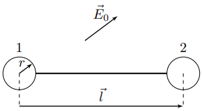
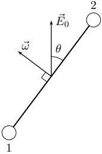
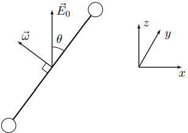
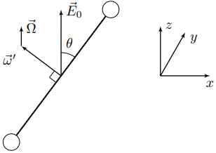
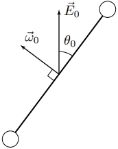

Y24 (2024) — English translation
This problem is devoted to the study of the dynamics of a system of conducting bodies placed in a uniform electrostatic field of intensity $\vec{E}_0$. The system under consideration is an electrically neutral dumbbell consisting of two metal balls of radius $r$ with a distance $l\gg r$ between their centers. The balls are connected by a very thin cylindrical rod. The mass of each of the balls is $m$, and the mass of the rod can be neglected. Let us introduce the vector $\vec{l}$, denoting the radius vector of the second ball relative to the first (see figure).
This problem is devoted to the study of the dynamics of a system of conducting bodies placed in a uniform electrostatic field of intensity $\vec{E}_0$. The system under consideration is an electrically neutral dumbbell consisting of two metal balls of radius $r$ with a distance $l\gg r$ between their centers. The balls are connected by a very thin cylindrical rod. The mass of each of the balls is $m$, and the mass of the rod can be neglected. Let us introduce the vector $\vec{l}$, denoting the radius vector of the second ball relative to the first (see figure).

In this part of the problem, the balls are connected by a metal rod. We will call the induced dipole moments of the balls and rod the dipole moments of the electrically neutral ball and rod, respectively, acquired by them when placed in an electrostatic field far from other bodies. In all points of this problem, neglect the induced dipole moments of the balls and the rod, and also assume that the charge distributions over the surfaces of the balls are uniform.
Let the system rotate around an axis perpendicular to the rod with a constant angular velocity $\vec{\omega}$. The direction of the electrostatic field strength $\vec{E}_0$ forms an angle $\theta$ with the plane in which the rod moves (see figure). The figure shows the position of the dumbbell at the moment when the rod lies in the plane containing the axis of rotation and the direction of the electrostatic field strength $\vec{E}_0$. Take the moment of time $t=0$ to be the position corresponding to the figure. In this part of the problem, the rod is not metal, but has a resistance $R$ between its ends.
Let the system rotate around an axis perpendicular to the rod with a constant angular velocity $\vec{\omega}$. The direction of the electrostatic field strength $\vec{E}_0$ forms an angle $\theta$ with the plane in which the rod moves (see figure). The figure shows the position of the dumbbell at the moment when the rod lies in the plane containing the axis of rotation and the direction of the electrostatic field strength $\vec{E}_0$. Take the moment of time $t=0$ to be the position corresponding to the figure. In this part of the problem, the rod is not metal, but has a resistance $R$ between its ends.

Further, in all points of the problem, consider that only forced oscillations occur in the system.
In all subsequent points of the problem, if the rod has a resistance $R$, it is so small that the voltage across the resistor is much less than the effective amplitude $\mathcal{E}_0$ of the voltage from point B1.
Let us introduce a rectangular Cartesian coordinate system $xyz$ as shown in the figure. Here, the $z$ axis is directed along the direction of the electrostatic field strength $\vec{E}_0$, and the $x$ axis lies in the plane of the figure.

In this part of the problem, the resistance of the rod is $R$. In a position of stable equilibrium, the rod is given a large angular velocity $\vec{\omega}_0$, perpendicular to the direction of the electrostatic field strength $\vec{E}_0$. Consider $\omega_0\gg\omega_{min}$, where $\omega_{min}$ was defined by you in step A5.
This part of the problem is devoted to studying the dynamics of the spatial movement of a dumbbell in an electrostatic field. It turns out that for a very fast rotating dumbbell there is a regime of motion in which on average it experiences regular precession around the $z$ axis. Regular precession means a mode of motion of the dumbbell in which the plane of rotation of the rod rotates around the axis $z$ with a constant average angular velocity $\Omega_z$, and the angle $\theta$ between the plane of motion of the rod and the direction of the electrostatic field strength $\vec{E}_0$ remains constant. In the mode corresponding to regular precession, the angular velocity vector of the dumbbell $\vec{\omega}$ is represented in the following form: $$\vec{\omega}=\vec{\omega}'+\vec{\Omega}{.} $$Здесь $\vec{\Omega}=\Omega_z\vec{e_z}$ – вектор средней угловой скорости прецессии плоскости движения стержня, а $\vec{\omega}'$ – вектор угловой скорости гантели в системе отсчёта, вращающейся со средней угловой скоростью прецессии плоскости движения стержня.
Данная часть задачи посвящена изучению динамики пространственного движения гантели в электростатическом поле. Оказывается, что для очень быстро вращающейся гантели существует режим движения, при котором она в среднем испытывает регулярную прецессию вокруг оси $z$. Под регулярной прецессией подразумевается такой режим движения гантели, при котором плоскость вращения стержня вращается вокруг оси $z$ с постоянной средней угловой скоростью $\Omega_z$, а угол $\theta⟦M 13⟧\vec{E}_0$ остаётся постоянным. В режиме, соответствующей регулярно прецессии, вектор угловой скорости гантели $\vec{\omega}$ представляется в следующем виде: $$\vec{\omega}=\vec{\omega}'+\vec{\Omega}{.} $$Здесь $\vec{\Omega}=\Omega_z\vec{e_z}$ – вектор средней угловой скорости прецессии плоскости движения стержня, а $\vec{\omega}'$ – vector of the angular velocity of the dumbbell in a reference system rotating with the average angular velocity of precession of the plane of motion of the rod.

In this part of the problem: Consider that at any moment the dumbbell rotates with an angular velocity $\omega'$, many times greater than $\omega_{min}$; Unless otherwise stated, assume that the angular velocity $\omega'$ is many times greater than the average angular velocity of precession $\Omega_z$. All components of the angular velocity vector of the rod (including $d\theta/dt=\dot\theta$) can be considered constant during the time during which the rod makes one revolution in its plane of rotation; Write all equations of motion of the rod in the form of averages over the time of one revolution of the rod in its plane of rotation.
In this part of the task:
Let the rod at points D1 and D2 be metal.
Let at the initial moment of time the electrostatic field strength $\vec{E}_0$ make an angle $\theta_0$ with the rod (see figure). The dumbbells instantly impart an angular velocity $\vec{\omega}_0$, the modulus of which is much greater than $\omega_{min}$, directed perpendicular to the rod as shown in the figure. Let us take into account the resistance of the rod $R$. Due to the smallness of $R$, we can still assume that the voltage across the resistor is much less than the effective amplitude $\mathcal{E}$ of the voltage from point $\mathrm{B1}$. Over a time of the order of $1/\omega_0$, the dumbbell goes into a mode of motion corresponding to a slowly changing precession. During the transition, the loss of kinetic energy of the dumbbell can be neglected. With slowly changing precession, the values $\Omega_z$ and $\theta$ change very slowly with time due to the small resistance $R$. Since the angle $\theta$ begins to change, for a given mode of dumbbell movement, the angular velocity vector is written in the following form: $$\vec{\omega}=\vec{\omega}'+\Omega_z\vec{e}_z+\dot{\theta}\vec{e}_y{.} $$Здесь $\vec{\omega}'$ всё также направлен перпендикулярно плоскости движения стержня. Во всех последующих пунктах считайте, что $\omega'\gg\dot\theta{,}\Omega$.
Пусть в начальный момент времени напряжённость электростатического поля $\vec{E}_ 0$ составляет угол $\theta_0$ со стержнем (cм. рисунок). Гантели мгновенно придают угловую скорость $\vec{\omega}_0$, модуль который много больше $\omega_{min}$, направленную перпендикулярно стержню так, как показано на рисунке. Учтем сопротивление стержня $R$. В силу малости $R$ по-прежнему можно считать, что напряжение на резисторе много меньше эффективной амплитуды $\mat hcal{E}$ напряжения из пункта $\mathrm{B1}$. За время порядка $1/\omega_0$ гантель переходит в режим движения, соответствующий медленно изменяющейся прецессии. За время перехода потерями кинетической энергии гантели можно пренебречь. При медленно изменяющейся прецессии величины $\Omega_z$ и $\theta$ изменяются со временем очень медленно в силу малости сопротивления $R⟦M2 8⟧\theta$ начинает изменяться, то для данного режима движения гантели вектор угловой скорости записывается в следующей форме: $$\vec{\omega}=\vec{\omega}'+\Omega_z\vec{e}_z+\dot{\theta}\vec{e}_y{.} $$Здесь $\vec{\omega}'$ всё также направлен перпендикулярно плоскости движения стержня. Во всех последующих пунктах считайте, что $\omega'\gg\dot\theta{,}\Omega$.

Source: https://pho.rs/p/3817